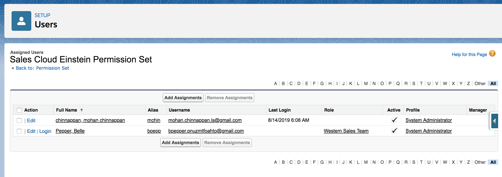

Lead Scoring
Lead Scoring
Lead scoring is a methodology for ranking leads in order to determine their sales-readiness. We score leads based on lead's :
- interest in our business
- current place in the buying cycle
- fit in regards to our business
- fast-tracked to sales
- developed with lead nurturing
Firmographics attributes
- company size
- technologies used
- industry
- geographic area
- job title
Behavioral attributes
- clicks on the website
- page views
- article downloads
- time spend on the website
- did they click on the email we sent
- participated in web chat
Lead Scoring Examples
Lead Scoring goal is clarity of a sales-ready lead by assigning points/terms like- A, B, C, D
- ‘hot’, ‘warm’ or ‘cold’
Einstein Lead Scoring


Einstein Lead Scoring, a key capability of Sales Cloud
Einstein, helps sales reps convert more leads, faster.
Uses artificial intelligence (AI) to automatically analyze
your historical sales data and discover the top factors
that determine whether a lead is likely to convert to
an opportunity.
Sales reps can segment and prioritize leads, and gain insight
into the factors that explain why leads are likely to convert or
not.
How it works?
Einstein looks at your company’s past leads, including any custom fields,
to find patterns in your successful lead conversion history.
Einstein Lead Scoring then determines which of your current leads fit your success patterns best.
Each lead receives a score indicating how well it fits your patterns,
along with insights about which of the lead’s fields affect its score most.
Machine Learning models used:
- Logistic Regression
- Random Forests
- Naive Bayes
Einstein Lead Scoring Setup
Key inputs need for the setting up
- Which conversion milestone constitutes success for your company?
Tell Einstein whether you convert leads simply to accounts and contacts, or also to opportunities, contact, and account. Should Einstein consider all lead fields?
In most cases, it's best to have Einstein consider all lead fields. There are some kinds of fields you might choose to have Einstein ignore. -
Should I tell Einstein to ignore any lead fields?
Some businesses use fields that don’t affect the lead’s chance of converting. For example, you might have a field that isn’t used until after a lead converts.
Telling Einstein to ignore those fields yields more accurate lead scores
Before ignoring a field, make sure the field doesn't affect the lead's chance of converting. Ignoring fields that do affect lead quality decreases the accuracy of your lead scores.
- How long it takes to analyze your lead conversion history? It can take up to 24 hours to analyze your lead conversion history and your current leads.
Permset Assignment

Setup Demo

ScoreIntelligence Object

Lead Object
Label Name Nillable Picklistvalues Referenceto Relationshipname Type Unique Updateable Lead ID Id false -- -- null id false false Deleted IsDeleted false -- -- null boolean false false Master Record ID MasterRecordId true -- [ "Lead" ] MasterRecord reference false false Last Name LastName false -- -- null string false true First Name FirstName true -- -- null string false true Salutation Salutation true [ "Mr." , "Ms." , "Mrs." , "Dr." , "Prof." ] -- null picklist false true Full Name Name false -- -- null string false false Title Title true -- -- null string false true Company Company false -- -- null string false true Street Street true -- -- null textarea false true City City true -- -- null string false true State/Province State true -- -- null string false true Zip/Postal Code PostalCode true -- -- null string false true Country Country true -- -- null string false true Latitude Latitude true -- -- null double false true Longitude Longitude true -- -- null double false true Geocode Accuracy GeocodeAccuracy true [ "Address" , "NearAddress" , "Block" , "Street" , "ExtendedZip" , "Zip" , "Neighborhood" , "City" , "County" , "State" , "Unknown" ] -- null picklist false true Address Address true -- -- null address false false Phone Phone true -- -- null phone false true Mobile Phone MobilePhone true -- -- null phone false true Fax Fax true -- -- null phone false true Email Email true -- -- null email false true Website Website true -- -- null url false true Photo URL PhotoUrl true -- -- null url false false Description Description true -- -- null textarea false true Lead Source LeadSource true [ "Web" , "Phone Inquiry" , "Partner Referral" , "Purchased List" , "Other" ] -- null picklist false true Status Status false [ "New - Not Contacted" , "Working - Contacted" , "Nurturing - Contacted" , "Closed - Converted" , "Closed - Not Converted" ] -- null picklist false true Industry Industry true [ "Agriculture" , "Apparel" , "Banking" , "Biotechnology" , "Chemicals" , "Communications" , "Construction" , "Consulting" , "Education" , "Electronics" , "Energy" , "Engineering" , "Entertainment" , "Environmental" , "Finance" , "Food & Beverage" , "Government" , "Healthcare" , "Hospitality" , "Insurance" , "Machinery" , "Manufacturing" , "Media" , "Not For Profit" , "Recreation" , "Retail" , "Shipping" , "Technology" , "Telecommunications" , "Transportation" , "Utilities" , "Other" ] -- null picklist false true Rating Rating true [ "Hot" , "Warm" , "Cold" ] -- null picklist false true Annual Revenue AnnualRevenue true -- -- null currency false true Employees NumberOfEmployees true -- -- null int false true Owner ID OwnerId false -- [ "Group", "User" ] Owner reference false true Converted IsConverted false -- -- null boolean false false Converted Date ConvertedDate true -- -- null date false false Converted Account ID ConvertedAccountId true -- [ "Account" ] ConvertedAccount reference false false Converted Contact ID ConvertedContactId true -- [ "Contact" ] ConvertedContact reference false false Converted Opportunity ID ConvertedOpportunityId true -- [ "Opportunity" ] ConvertedOpportunity reference false false Unread By Owner IsUnreadByOwner false -- -- null boolean false true Created Date CreatedDate false -- -- null datetime false false Created By ID CreatedById false -- [ "User" ] CreatedBy reference false false Last Modified Date LastModifiedDate false -- -- null datetime false false Last Modified By ID LastModifiedById false -- [ "User" ] LastModifiedBy reference false false System Modstamp SystemModstamp false -- -- null datetime false false Last Activity LastActivityDate true -- -- null date false false Last Viewed Date LastViewedDate true -- -- null datetime false false Last Referenced Date LastReferencedDate true -- -- null datetime false false Data.com Key Jigsaw true -- -- null string false true Jigsaw Contact ID JigsawContactId true -- -- JigsawContact string false false Clean Status CleanStatus true [ "Matched" , "Different" , "Acknowledged" , "NotFound" , "Inactive" , "Pending" , "SelectMatch" , "Skipped" ] -- null picklist false true Company D-U-N-S Number CompanyDunsNumber true -- -- null string false true D&B Company ID DandbCompanyId true -- [ "DandBCompany" ] DandbCompany reference false true Email Bounced Reason EmailBouncedReason true -- -- null string false true Email Bounced Date EmailBouncedDate true -- -- null datetime false true Score Intelligence ID ScoreIntelligenceId true -- [ "ScoreIntelligence" ] ScoreIntelligence reference false false SIC Code SICCode__c true -- -- null string false true Product Interest ProductInterest__c true [ "GC1000 series" , "GC5000 series" , "GC3000 series" ] -- null picklist false true Primary Primary__c true [ "No" , "Yes" ] -- null picklist false true Current Generator(s) CurrentGenerators__c true -- -- null string false true Number of Locations NumberofLocations__c true -- -- null double false true
Assign Top Leads to Reps and other Leads to Lead Queue

Top Lead Assignment Example
Low Lead Score Assignment to Lead Queue Example

Einstein Analytics Lead Scoring Dashboard
Dashboard provides insights into which lead characteristics (attributes) result in the most conversions.